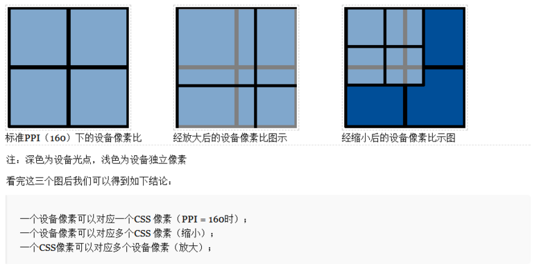

背景
浏览器的viewport是可以看到Web内容的窗口区域，通常与渲染出的页面的大小不同，这种情况下，浏览器会提供滚动条以滚动访问所有内容。
窄屏幕设备（如移动设备）在一个虚拟窗口或视口中渲染页面，这个窗口或视口通常比屏幕宽；然后缩小渲染的结果，以便在一屏内显示所有内容。然后用户可以移动、缩放以查看页面的不同区域。例如，如果移动屏幕的宽度为640px，则可能会用980px的虚拟视口渲染页面，然后缩小页面以适应640px的窗口大小。
这样做是因为许多页面没有做移动端优化，在小窗口渲染时会乱掉（或看起来乱）。所以，这种虚拟视口是一种让未做移动端优化的网站在窄屏设备上看起来更好的办法。
移动浏览器的问题
当我们将移动浏览器与桌面浏览器进行比较时，最明显的区别是屏幕尺寸。移动浏览器显示的桌面优化网站显着少于桌面浏览器; 通过缩小直到文本不可读的小，或者只显示适合屏幕的网站的一小部分。
移动屏幕远小于桌面屏幕; 考虑最大宽度为400px，有时候要少得多。（有些手机报告的宽度较大，但它们正在撒谎 - 或者至少给我们无用的信息。）
平板电脑设备的中间层，如iPad或传闻中的基于HP webOS的平板设备，将弥合桌面和移动设备之间的差距，但这不会改变根本问题。网站也必须在移动设备上运行，因此我们必须让它们在小屏幕上显示。
最重要的问题集中在CSS上，尤其是视口的尺寸。如果我们一对一地复制桌面模型，我们的CSS就会开始惨不忍睹。
让我们回到我们的侧边栏吧width: 10%。如果移动浏览器与桌面浏览器完全相同，那么它们最多只能生成40px宽的元素，而且这个元素太窄了。你的液体布局看起来会非常可怕。
解决问题的一种方法是为移动浏览器构建一个特殊网站。即使除了你是否应该这样做的根本问题之外，实际的问题是只有极少数的网站所有者被充分利用以满足移动设备的需求。
移动浏览器供应商希望为他们的客户提供最佳体验，现在这意味着“尽可能像桌面一样。”因此需要一些技巧。
设备像素和CSS像素
讲解viewport视口前先来了解一下这两个概念，这两个概念虽然都是说像素，但是此像素非彼像素。
设备像素
设备像素（device pixel）是物理概念，顾名思义，显示屏是由一个个物理像素点组成的，通过控制每个像素点的颜色，使屏幕显示出不同的图像，屏幕从工厂出来那天起，它上面的物理像素点就固定不变了，单位。
pt在css单位中属于真正的绝对单位，1pt = 1/72(inch),inch及英寸，而1英寸等于2.54厘米。
pt = 1/72(英寸), px = 1/dpi(英寸)
不同的设备，其图像基本单位是不同的，比如显示器的点距，可以认为是显示器的物理像素。现在的液晶显示器的点距一般在0.25mm到0.29mm之间。而打印机的墨点，也可以认为是打印机的物理像素，300DPI就是0.085mm，600DPI就是0.042mm。

注意，我们通常所说的显示器分辨率，其实是指桌面设定的分辨率，而不是显示器的物理分辨率。只不过现在液晶显示器成为主流，由于液晶的显示原理与CRT不同，只有在桌面分辨率与物理分辨率一致的情况下，显示效果最佳，所以现在我们的桌面分辨率几乎总是与显示器的物理分辨率一致了。
CSS像素
CSS像素（css pixel）是Web编程概念，指的是CSS样式代码中使用的逻辑像素。
在CSS规范中，长度单位分为两类：绝对（absolute）单位和相对（relative）单位。而px是一个相对单位，相对于设备像素。
CSS像素的相对性
举个例子理解：
使用PC端浏览器打开一个网页，网页中有一个宽400px的盒子（块级元素）。浏览器宽为800px，那么这个盒子的宽此时应该占据页面的一半。但是我们使用浏览器中页面放大功能，放大200%，也就是原来的两倍，那么此时该盒子宽应该占满了整个页面。但是既没有调整浏览器窗口大小，也没有改变任何的css样式，但是该盒子却看上去放大了一倍。这是因为使用页面放大功能把css像素放大了两倍。
CSS像素与屏幕像素1：1同样大小时：
CSS像素(黑色边框)开始被拉伸，此时1个CSS像素大于1个屏幕像素
默认情况下一个CSS像素应该是等同于一个物理像素的，但是浏览器放大的操作让一个CSS像素等于两倍的设备像素。
而在移动端中的高PPI的设备上，CSS像素在默认情况下就相当于多个设备像素，如iPhone5使用的是Retina视网膜屏幕，使用2px * 2px的设备像素代表1px * 1px的CSS像素。所以设备像素为640 * 1136，而CSS像素为320px * 568px。
设备独立像素（Device Independent Pixel）简写DIP或DP
设备独立像素也叫 密度无关像素 ，可以认为是计算机坐标系统中的一个点，这个点表示一个可以由程序使用并控制的虚拟像素，可以由相关系统转换为物理像素。设备独立像素是一个整体概念，包括了css像素，比如:css像素，只是在android /ios机中，css像素不叫 “css像素了”，而叫“设备独立像素”。iOS 中的 pt 和安卓中的单位 dp 本质上是一个概念，设备都是独立像素的意思，只是说法不一样。
所以逻辑上各单位的关系：CSS像素 = 设备独立像素 = 逻辑像素
设备像素与CSS像素的关系
了解它们间的关系时，先来了解两个概念：ppi和dpr
PPI像素密度(pixel per inch) | DPR设备像素比(device pixel ratio)
PPI：屏幕密度
ppi:表示每英寸所拥有的像素数目，数值越高，代表显示屏能够以越高的密度显示图像。即每英寸像素取值，更确切的说法应该是像素密度，也就是衡量单位物理面积内拥有像素值的情况。
ppi的计算公式可以查阅资料ppi计算公式。
来算一下数学
图中以屏幕尺寸为4寸的iPhone 5s为例，分辨率为1136 x 640，代入公式像素密度为326PPI。计算结果会有出入。
DPI: 每英寸多少点。如果是在当用于描述显示器设备时，ppi和dpi是同一概念，是相等的。
这里的点是一个抽象的单位，它可以是屏幕像素点、图片像素点也可以是打印机的墨点。
平时你可能会看到使用
DPI来描述图片和屏幕，这时的DPI应该和PPI是等价的，DPI最常用的是用于描述打印机，表示打印机每英寸可以打印的点数。一张图片在屏幕上显示时，它的像素点数是规则排列的，每个像素点都有特定的位置和颜色。
当使用打印机进行打印时，打印机可能不会规则的将这些点打印出来，而是使用一个个打印点来呈现这张图像，这些打印点之间会有一定的空隙，这就是
DPI所描述的：打印点的密度

在上面的图像中我们可以清晰的看到，打印机是如何使用墨点来打印一张图像。所以，打印机的
DPI越高，打印图像的精细程度就越高，同时这也会消耗更多的墨点和时间。
DPR：设备像素比
设备像素比（device pixel ratio）定义了设备像素和设备独立像素（CSS像素）的转换关系，即一个设备像素对应多少个设备独立像素（CSS像素）。
- 与设备的关系：
DPR = 屏幕横向设备像素 / 设备PPI - 与设备像素、CSS像素的关系：
DPR = 设备像素 / CSS像素 - 与 理想视口(下文将提到)的关系：
DPR = 屏幕横向设备像素 / 理想视口的宽度
在一台移动终端中，设备像素的大小是固定的，不可变的。但是设备独立像素dip是可以被拉长或压缩的。

例如iPhone5s中使用的是Retina视网膜屏幕，即PPI超过300的都叫做超高密度屏幕，只不过苹果公司给了换了个高大上的名字：Retina视网膜屏幕。
但是在普通屏幕下1个设备像素等于一个CSS像素的设备已经很少了，比如 Iphone 5s 设备像素比为2，Iphone 6s 设备像素比为3。至于安卓机中的设备像素比就更多了，有1.3、1.5、2、3等等。
如何理解DPR
设备像素比(dpr) 是指在移动开发中1个css像素占用多少设备像素，如2代表1个css像素用2x2个设备像素来绘制。
设备像素比(dpr)，公式为1px = (dpr)^2 * 1dp，可以理解为1px由多少个设备像素组成；
打开
chrome的开发者工具，我们可以模拟各个手机型号的显示情况，每种型号上面会显示一个尺寸，比如iPhone X显示的尺寸是375x812，实际iPhone X的分辨率会比这高很多，这里显示的就是设备独立像素。
设备像素和CSS像素的关系
以iPhone6/7/8为例：
设备宽高为375 × 667，可以理解为设备独立像素(或css像素)。
dpr为2，根据上面的计算公式，其物理像素就为750 × 1334。
上图中可以看出，对于这样的css样式：
1 | width: 2px; |
在不同的屏幕上(普通屏幕 vs retina屏幕)，css像素所呈现的大小(物理尺寸)是一致的，不同的是1个css像素所对应的物理像素个数是不一致的。
在普通屏幕下，1个css像素 对应 1个物理像素(1:1)。 在retina 屏幕下，1个css像素对应 4个物理像素(1:4)。
window.devicePixelRatio
window.devicePixelRatio是设备上物理像素和设备独立像素(device-independent pixels (dips))的比例。
公式表示就是：window.devicePixelRatio = 物理像素 / dips。
dip或dp,（device independent pixels，设备独立像素）与屏幕密度有关。dip可以用来辅助区分视网膜设备还是非视网膜设备。
所有非视网膜屏幕的iphone在垂直的时候，宽度为320物理像素。当你使用<meta name="viewport" content="width=device-width">的时候，会设置视窗布局宽度（不同于视觉区域宽度，不放大显示情况下，两者大小一致，见下图）为320px, 于是，页面很自然地覆盖在屏幕上。
这样，非视网膜屏幕的iphone上，屏幕物理像素320像素，独立像素也是320像素，因此，window.devicePixelRatio等于1.
而对于视网膜屏幕的iphone，如iphone4s, 纵向显示的时候，屏幕物理像素640像素。同样，当用户设置<meta name="viewport" content="width=device-width">的时候，其视区宽度并不是640像素，而是320像素，这是为了有更好的阅读体验 – 更合适的文字大小。
这样，在视网膜屏幕的iphone上，屏幕物理像素640像素，独立像素还是320像素，因此，window.devicePixelRatio等于2.
在css中，可以通过-webkit-device-pixel-ratio，webkit-min-device-pixel-ratio和-webkit-max-device-pixel-ratio进行媒体查询，对不同dpr的设备，做一些样式适配(这里只针对webkit内核的浏览器和webview)。
兼容性
喜忧参半。好的是Safari, Android WebKit, Chrome 22+(Android), Opera Mobile, BlackBerry WebKit, QQ, Palm WebKit, 及Dolfin都能正确实现该属性。
当然，大部分这些浏览器仍然运行在devicePixelRatio值应该为1的系统上，当它们移动到视网膜类似设备时候，可能就会遇到问题。
注意：你可以为这个 window.devicePixelRatio 重新赋值，但并不会对最终的显示造成任何的影响。
1 | window.devicePixelRatio = 10; |
媒体查询min-device-pixel-ratio
设备像素比device pixel ratio简称dpr，即物理像素和设备独立像素的比值。
在web中，浏览器为我们提供了window.devicePixelRatio来帮助我们获取dpr。
在css中，可以使用媒体查询min-device-pixel-ratio，区分dpr：
1 | @media (-webkit-min-device-pixel-ratio: 2),(min-device-pixel-ratio: 2){ } |
在React Native中，我们也可以使用PixelRatio.get()来获取DPR。
当然，上面的规则也有例外，iPhone 6、7、8 Plus的实际物理像素是1080 x 1920，在开发者工具中我们可以看到：它的设备独立像素是414 x 736，设备像素比为3，设备独立像素和设备像素比的乘积并不等于1080 x 1920，而是等于1242 x 2208。
实际上，手机会自动把1242 x 2208个像素点塞进1080 * 1920个物理像素点来渲染，我们不用关心这个过程，而1242 x 2208被称为屏幕的设计像素。我们开发过程中也是以这个设计像素为准。
实际上，从苹果提出视网膜屏幕开始，才出现设备像素比这个概念，因为在这之前，移动设备都是直接使用物理像素来进行展示。
设计师和前端工程师之间如何协同
视觉稿
在前端开发之前，视觉MM会给我们一个psd文件，称之为视觉稿。
对于移动端开发而言，为了做到页面高清的效果，视觉稿的规范往往会遵循以下两点：
首先，选取一款手机的屏幕宽高作为基准(以前是iphone4的320×480，现在更多的是iphone6的375×667)。
对于retina屏幕(如: dpr=2)，为了达到高清效果，视觉稿的画布大小会是基准的2倍，也就是说像素点个数是原来的4倍（对iphone6而言：原先的375×667，就会变成750×1334）。
设计师和前端开发的适配协作基本思路
出自手淘：
- 选择一种尺寸作为设计和开发基准
- 定义一套适配规则，自动适配剩下的两种尺寸(其实不仅这两种，你懂的)
- 特殊适配效果给出设计效果
手淘设计师常选择iPhone6作为基准设计尺寸，交付给前端的设计尺寸是按750px * 1334px为准(高度会随着内容多少而改变)。前端开发人员通过一套适配规则自动适配到其他的尺寸。
分辨率、像素和屏幕尺寸
分辨率是指一个块屏幕的像素尺寸。比如说1334 * 750是iPhone6的分辨率。
屏幕尺寸是指显示屏幕对角线的尺寸，一般用英寸来表示。
询问别人一粒像素有多大是一个非常鸡贼的问题（小心面试遇到这样的题），虽然我们说像素是构成屏幕的发光的点，是物理的，但是像素在脱离了屏幕尺寸之后是没有大小可言的，你可以将 1920 * 1080 颗像素放到一台 40 寸的小米电视机里面，也可以将同样多的像素全部塞到一台 5.5 寸的 iPhone7 Plus 手机里面去，那么对于 40 寸的电视而言，每个像素颗粒当然会大于 5.5 寸的手机的像素。
所以光看屏幕的分辨率对于设计师来说是不具备多少实际意义的，通过分辨率计算得出的像素密度（PPI）才是设计师要关心的问题，我们通过屏幕分辨率和屏幕尺寸就能计算出屏幕的像素密度的。
再次使用 iPhone（6~7）作为例子。我们知道该屏幕的横向物理尺寸为 2.3 英寸 ，且横向具有 750 颗像素，根据下面的公式，我们能够算出 iPhone（6~7）的屏幕是 326 PPI，意为每寸存在 326 颗像素。
其实不论我们怎么除，计算得出来的像素密度（PPI）都会是这个数，宽存在像素除以宽物理长度，高存在像素除以高物理长度，得数都接近于 326。
英寸
一般用英寸描述屏幕的物理大小，如电脑显示器的17、22，手机显示器的4.8、5.7等使用的单位都是英寸。
需要注意，上面的尺寸都是屏幕对角线的长度
英寸(inch,缩写为in)在荷兰语中的本意是大拇指，一英寸就是指甲底部普通人拇指的宽度。
英寸和厘米的换算：1英寸 = 2.54 厘米
像素
像素即一个小方块，它具有特定的位置和颜色。
图片、电子屏幕（手机、电脑）就是由无数个具有特定颜色和特定位置的小方块拼接而成。
像素可以作为图片或电子屏幕的最小组成单位。
屏幕分辨率
屏幕分辨率指一个屏幕具体由多少个像素点组成。
iPhone XS Max 和 iPhone SE的分辨率分别为2688 x 1242和1136 x 640。这表示手机分别在垂直和水平上所具有的像素点数。
当然分辨率高不代表屏幕就清晰，屏幕的清晰程度还与尺寸有关。
图像分辨率
我们通常说的图片分辨率其实是指图片含有的像素数，比如一张图片的分辨率为800 x 400。这表示图片分别在垂直和水平上所具有的像素点数为800和400。
同一尺寸的图片，分辨率越高，图片越清晰。
viewport视口
在移动设备上的浏览器都会认为自己能让所有网站显示，即使不是为移动设备设计的网站。但是以浏览器可视区域为viewport的话，移动设备屏幕都不宽，所以那些为桌面浏览器设计的网站放到移动设备显示的时候，必然会因为viewport太窄而挤作一团，甚至布局也会乱掉。虽然市面上说某某手机分辨率达到768 * 1024，甚至到达2k屏的分辨率，那这么高的分辨率用来显示桌面网站应该没有问题吧。但是在上述文中CSS像素中的1px只是一个相对值，并不能够直接代表等于屏幕上的1px。手机分辨率越大，但是屏幕尺寸不变的情况下，css像素中的1px就回代表更多的物理像素，才能让1px的东西在屏幕上的大小与那些低分辨率的设备差不多，不然会因为太过于小而使得肉眼无法看清。
所以在移动设备下，浏览器的viewport可以分为三个：可视视口（visual viewport）、布局视口（layout viewport）和理想视口（ideal viewport）。（来自ppk大神观点）
视口(
viewport)代表当前可见的计算机图形区域。在Web浏览器术语中，通常与浏览器窗口相同，但不包括浏览器的UI， 菜单栏等——即指你正在浏览的文档的那一部分。
可视视口
可视视口就是目前在屏幕上显示页面的一部分。用户可以滚动以更改用户自己所看到的部分，或者缩放以更改可视窗口的大小。

但是，CSS布局（尤其是百分比宽度）是相对于布局视口计算的， 布局视口比视觉视口宽得多。
因此，<html>元素最初采用布局视口的宽度，并且您的CSS被解释为屏幕明显比手机屏幕宽。这可确保您网站的布局与桌面浏览器上的布局相同。
布局视口有多宽？这与浏览器不同。Safari iPhone使用980px，Opera使用850px，Android WebKit使用800px和IE使用974px。
可视视口的宽度可以通过
window.innerWidth获取，但是在Android 2, Oprea mini 和 UC 8中无法正确获取。
布局视口
一般移动设备的浏览器都默认设置了一个 viewport 元标签，定义一个虚拟的布局视口（layout viewport），用于解决早期的页面在手机上显示的问题。iOS, Android 基本都将这个视口分辨率设置为 980px，所以 PC 上的网页基本能在手机上呈现，只不过元素看上去很小，一般默认可以通过手动缩放网页。
完全缩小的情况下：visual viewport = layout viewport

浏览器选择了布局视口的尺寸，使其在完全缩小模式下完全覆盖屏幕（因此等于可视视口）.
不完全缩小的情况下：layout viewport > visual viewport

布局视口的宽度和高度等于在不完全缩小模式下可以在屏幕上显示的任何宽度和高度。当用户放大这些尺寸时保持不变。
在放大和缩小的过程中，visual viewport和layout viewport的宽，高都没发生任何的变化,变化的仅仅就像是用户拿着这个visual viewport去远离或者靠近layout viewport，在远离或者靠近的过程中，就会呈现出缩放的效果来。
布局视口的宽度/高度可以通过
document.documentElement.clientWidth / Height获取。
布局视口和可视视口的联系
可以把layout viewport理解为一张完全遮住并且不能更边大小的白纸，把visual viewport理解为一个有边框的透视器，你可以通过这个透视器来查看这张白纸的内容。通过这个透视器你可以一点点的看到白纸部分内容，这里所能看到的就是visual viewport。你也可以靠近或者远离的方式来透视白纸（白纸静止不动），你看的内容可以变多或者变少，但是白纸layout viewport自身的大小和形状是不会发生改变的。
理想视口
布局视口的默认宽度并不是一个理想的宽度，于是 Apple 和其他浏览器厂商引入了理想视口的概念，它对设备而言是最理想的布局视口尺寸。显示在理想视口中的网站具有最理想的宽度，用户无需进行缩放。
完美适配：首先不需要用户缩放和横向滚动条就能正常的查看网站的所有内容；第二，显示的文字的大小是合适，比如一段14px大小的文字，不会因为在一个高密度像素的屏幕里显示得太小而无法看清，理想的情况是这段14px的文字无论是在何种密度屏幕，何种分辨率下，显示出来的大小都是差不多的。当然，不只是文字，其他元素像图片什么的也是这个道理。
理想视口的值其实就是屏幕分辨率的值，它对应的像素叫做设备逻辑像素（device independent pixel, dip）。dip 和设备的物理像素无关，一个 dip 在任意像素密度的设备屏幕上都占据相同的空间。如果用户没有进行缩放，那么一个 CSS 像素就等于一个 dip。
ideal viewport并没有一个固定的尺寸，不同的设备拥有有不同的ideal viewport。所有的iphone的ideal viewport宽度都是320px，无论它的屏幕宽度是320还是640，也就是说，在iphone中，css中的320px就代表iphone屏幕的宽度。
但是安卓设备就比较复杂了，有320px的，有360px的，有384px的等等，关于不同的设备ideal viewport的宽度都为多少，可以到 http://viewportsizes.com 去查看一下，里面收集了众多设备的理想宽度。
用下面的方法可以使布局视口与理想视口的宽度一致：1
<meta name="viewport" content="width=device-width">
缩放
两个视口都以CSS像素为单位进行测量。但是，当视觉视口尺寸随着缩放而变化时（如果放大，屏幕上的CSS像素较少），布局视口尺寸保持不变。（如果他们没有，您的页面将不断重排，因为重新计算百分比宽度。）
缩放是相对于ideal viewport缩放的，缩放值越大，当前viewport的宽度就会越小，反之亦然。例如在iphone中，ideal viewport 的宽度是320px，如果我们设置initial-scale=2，此时 viewport 的宽度会变为只有160px了，这也好理解，放大了一倍嘛，就是原来1px的东西变成2px了，但是1px变为2px并不是把原来的320px变为640px了，而是在实际宽度不变的情况下，1px变得跟原来的2px的长度一样了，所以放大2倍后原来需要320px才能填满的宽度现在只需要160px就做到了。因此，我们可以得出一个公式：
视觉视口和缩放比例的关系为：
1 | visual viewport宽度 = ideal viewport宽度 / 当前缩放值 |
所以，当用户放大时，视觉视口将会变小，CSS 像素将跨越更多的物理像素。
获取视口大小
window.innerHeight：获取浏览器视觉视口高度（包括垂直滚动条）。window.outerHeight：获取浏览器窗口外部的高度。表示整个浏览器窗口的高度，包括侧边栏、窗口镶边和调正窗口大小的边框。window.screen.Height：获取获屏幕取理想视口高度，这个数值是固定的，`设备的分辨率/设备像素比window.screen.availHeight：浏览器窗口可用的高度。document.documentElement.clientHeight：获取浏览器布局视口高度，包括内边距，但不包括垂直滚动条、边框和外边距。document.documentElement.offsetHeight：包括内边距、滚动条、边框和外边距。document.documentElement.scrollHeight：在不使用滚动条的情况下适合视口中的所有内容所需的最小宽度。测量方式与clientHeight相同：它包含元素的内边距，但不包括边框，外边距或垂直滚动条。
总结
ppk大神把移动设备上的viewport分为 layout viewport 、 visual viewport 和 ideal viewport 三类，其中的ideal viewport是最适合移动设备的viewport，ideal viewport的宽度等于移动设备的屏幕宽度，只要在css中把某一元素的宽度设为ideal viewport的宽度(单位用px)，那么这个元素的宽度就是设备屏幕的宽度了，也就是宽度为100%的效果。ideal viewport 的意义在于，无论在何种分辨率的屏幕下，那些针对ideal viewport而设计的网站，不需要用户手动缩放，也不需要出现横向滚动条，都可以完美的呈现给用户。
利用meta标签对viewport进行控制
移动设备默认的viewport是layout viewport，也就是那个比屏幕要宽的viewport，但在进行移动设备网站的开发时，我们需要的是ideal viewport。那么怎么才能得到ideal viewport呢？这就该轮到meta标签出场了。
我们可以使用视口元标签（viewport meta 标签）来进行布局视口的设置。1
<meta name="viewport" content="width=device-width, initial-scale=1.0, maximum-scale=1.0, user-scalable=no">
上述meta标签的作用是让当前viewport的宽度等于设备的宽度，同时不允许用户手动缩放。
meta viewport标签首先是由苹果公司在其safari浏览器中引入的，目的就是解决移动设备的viewport问题。后来安卓以及各大浏览器厂商也都纷纷效仿，引入对meta viewport的支持，事实也证明这个东西还是非常有用的。
在苹果的规范中，meta viewport 有6个属性(暂且把content中的那些东西称为一个个属性和值)，如下：
| 属性 | 取值 | 描述 |
|---|---|---|
| width | 正整数或device-width | 定义视口的宽度，单位为像素 |
| height | 正整数或device-height | 定义视口的高度，单位为像素，一般不用 |
| initial-scale | [0.0-10.0] | 定义初始缩放值 |
| minimum-scale | [0.0-10.0] | 定义放大最大比例，它必须小于或等于maximum-scale设置 |
| maximum-scale | [0.0-10.0] | 定义缩小最小比例，它必须大于或等于minimum-scale设置 |
| user-scalable | yes / no | 定义是否允许用户手动缩放页面，默认值 yes |
有几点需要注意：
- viewport 标签只对移动端浏览器有效，对 PC 端浏览器是无效的
- 当缩放比例为 100% 时，dip 宽度 = CSS 像素宽度 = 理想视口的宽度 = 布局视口的宽度
- 单独设置 initial-scale 或 width 都会有兼容性问题，所以设置布局视口为理想视口的最佳方法是同时设置这两个属性
- 即使设置了 user-scalable = no，在 Android Chrome 浏览器中也可以强制启用手动缩放
这些属性可以同时使用，也可以单独使用或混合使用，多个属性同时使用时用逗号隔开就行了。
此外，在安卓中还支持target-densitydpi 这个私有属性，它表示目标设备的密度等级，作用是决定css中的1px代表多少物理像素。
| 属性 | 取值 | 描述 |
|---|---|---|
| target-densitydpi | high-dpi,medium-dpi,low-dpi,device-dpi | 私有属性，它表示目标设备的密度等级，作用是决定css中的1px代表多少物理像素 |
特别说明的是，当target-densitydpi=device-dpi时， css中的1px会等于物理像素中的1px。
因为这个属性只有安卓支持，并且安卓已经决定要废弃<strike>target-densitydpi</strike> 这个属性了，所以这个属性我们要避免进行使用。
动态改变meta viewport标签
第一种方式：
使用document.write来动态输出meta viewport标签，例如
1 | document.write('<meta name="viewport" content="width=device-width,initial-scale=1">') |
第二种方式
通过setAttribute来改变
1 | <meta id="testViewport" name="viewport" content="width = 380"> |
参考资料
https://segmentfault.com/a/1190000015884091
https://www.quirksmode.org/mobile/viewports.html
https://www.quirksmode.org/mobile/viewports2.html
https://www.quirksmode.org/mobile/metaviewport/
https://developer.mozilla.org/zh-CN/docs/Mobile/Viewport_meta_tag
https://www.jianshu.com/p/af6dad66e49a
https://juejin.im/post/5bb6c62be51d450e47142c60
https://www.jianshu.com/p/3d28f4959c5a
https://stackoverflow.com/questions/6333927/difference-between-visual-viewport-and-layout-viewport